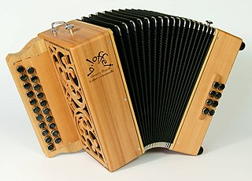

Bobre, arc avec corde et callebasse avec batavek galet et kaskavel
Le bobre est un instrument d’origine malgache. C’est un arc dont le bois est en « pan maron » ou « zavoca maron » et la corde en fibre de choca (ou câble de frein selon Danyèl Waro). Une calebasse en guise de caisse de résonance coulisse sur la corde. Cette corde est battue par une baguette de bambou qu’on appelle batavek tenue en même temps qu’un hochet qu’on appelle kaskavel ou kavia. Ce hochet est en fait une bourse de vacoa remplie de graines de cascavelle. L’interprète effectue des variations de son en appuyant plus ou moins l’ouverture de la calebasse sur son abdomen et en jouant avec la vibration de la corde à l’aide d’un doigt ou d’un petit caillou ou d’une pièce métallique de sa main qui tient l’arc. D’autres sons peuvent être obtenus en frappant le bois de l’arc ou la callebasse avec le batavek.
On retrouve cet instrument en Afrique et dans l’Océan Indien. A Rodrigues, on l’appelle bon, aux Seychelles bonm, à Maurice bombe. Il est proche du berimbau , instrument populaire du Brésil. À la Réunion, il accompagne chanteurs de séga et parfois de maloya.
Histoire de la musique à la Réunion
un Kayamb
Le kayamb est un instrument rectangulaire d’environ 40 cm sur 50 cm et d’une épaisseur d’environ 3 cm. Il est fabriqué à partir d’un cadre de bois sur lequel sont clouées ou tressées de part et d’autre, les hampes des fleurs de canne à sucre entre lesquelles circulent des graines de cascavelle. Le joueur de kayamb tient son instrument légèrement en oblique en le balançant en rythme dans le sens de la largeur. Ce genre de hochet géant est originaire d’Afrique de l’Est mais sa réalisation avec les matériaux locaux (fleurs de canne et graines de cascavelle) en fait un instrument typiquement réunionnais. C’est l’un des deux instruments emblématique du maloya avec le roulèr.
Piker a deux cylindre de bambou
Le piker (ou sombrèr qui désigne la batterie) est un instrument à percussion très rudimentaire. C’est un simple ensemble de 2 ou 3 nœuds de bambou sur lesquels on frappe à l’aide de 2 baguettes. Il peut être posé sur pied et on y jour debout ou bien posé à terre.

Accordéon diatonique fabriqué par Bernard Loffet. Les râlé poussé réunionnais sont souvent de facture italienne ou allemande mais celui-ci est français.
C’est ainsi qu’on appelle parfois l’accordéon diatonique qui accompagne parfois les musiques traditionnelles. Comme en Europe, cet instrument de musique a eu du succès surtout au XIXème siècle, juste après son invention pour tomber peu à peu dans l’oubli surtout à l’après guerre. Les années 70 ont vu revenir cet instrument avec l’avènement des musiques folk. La Réunion a aussi pris cette voie en popularisant le maloya et le séga durant cette même période.
Roulèr posé sur son socle
Gros tambour cylindrique qui se joue avec les deux mains assis à cheval sur l’instrument, le rouler est la basse rythmique du maloya. A l’origine, il s’agissait d’un gros tronc évidé. On utilise à présent un fut de vin ou de rhum aux extrémités coupées sur lequel est apposée une peau de bœuf. À l’origine, les esclaves qui ont inventé le maloya clouaient cette peau mais les musiciens d’aujourd’hui tendent à préférer les peaux cordées, c’est-à-dire tenues avec une corde tressée. Le roulèr est au cœur du maloya, c’est cet instrument qui donne la cadence.